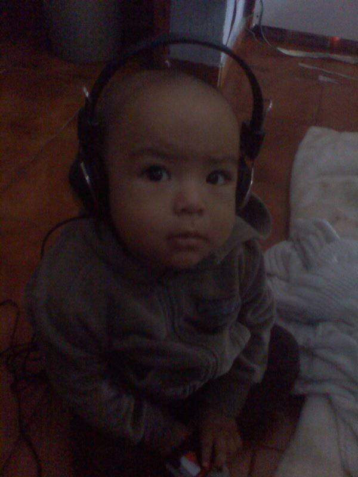
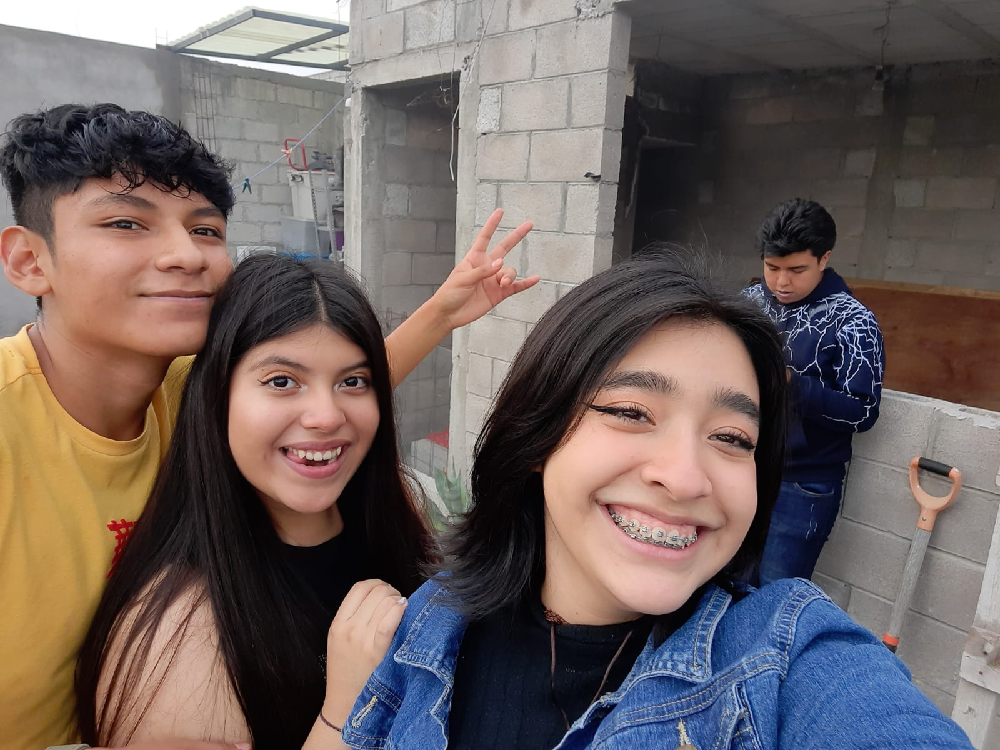
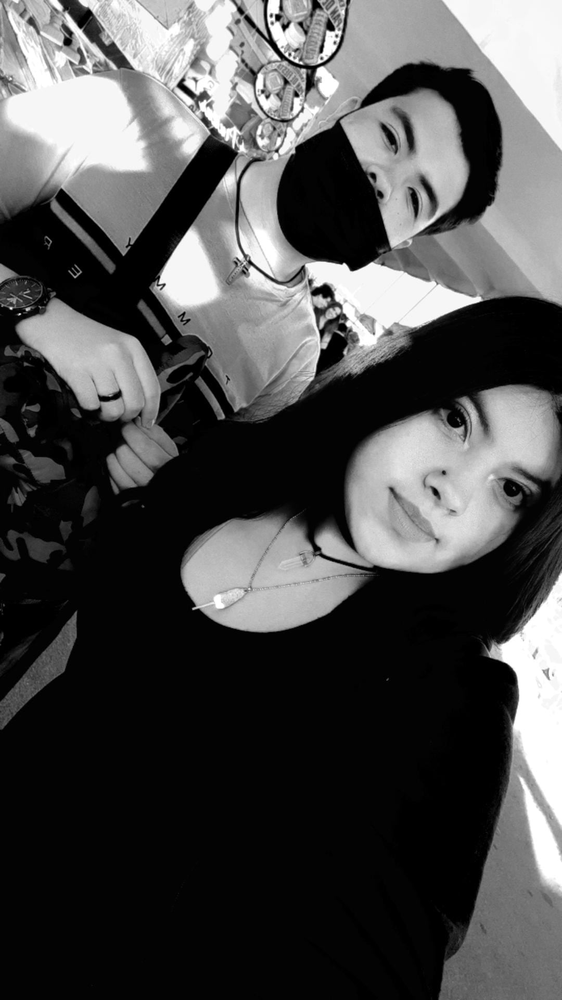
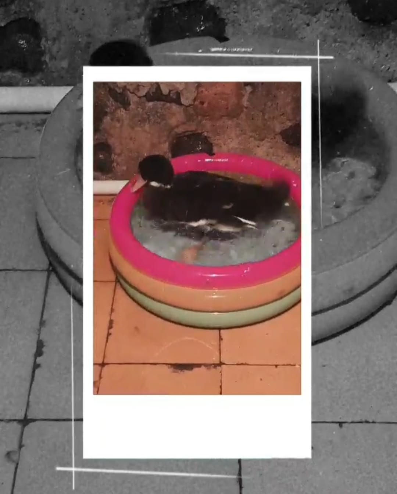
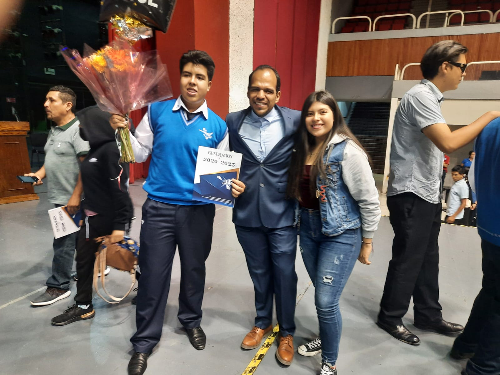
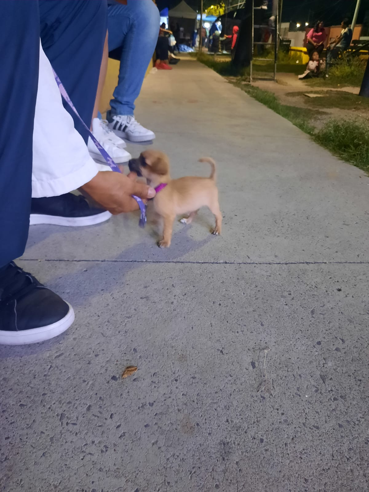

Datos de importantes de ciertos años de mi vida:
- A los 2 años, mi papá tuvo un accidente trabajando, y lo tuvieron que llevar a CDMX porque su accidente fue fuerte y tenían miedo los médicos a que dejarán sin caminar a mi papá, así que me llevaron a vivir entre 3 familias distintas.
porque todos me querian con ellos, ya que era una bebé muy simpática, y ganó mi bisabuelita porque eramos más cercanos ahí por otro bebé ( mi tío), y a mi hermano lo medio separaron de mi porque el tenía mamitis y el no podía estar
lejos de mi mamá, así que cuando nos dejaron con mi bisabuelita mi hermano lloraba mucho, pero, había otro bebé, (digo bebé porque tenían meses que habían nacido), así que mi primo lloraba demasiado, por cualquier cosa, y mi hermano
solo por su mamá, en fin, los 2 lloraban demasiado así que mi hermano se fue con las hermanas de mi abuelo por parte de mi mamá porque ahí el no lloraba y yo me quedé con mi bisabuelita, pero en determinados días me llevaban allá para
que me vieran y conviviera con mi hermano, las familias con las que nos dividiamos eran:
se iba a quedar en
familia 1: mi bisabuelita por parte de mi mamá (era en donde estaba casi toda la semana)
familia 2: mi abuelito y tías por parte de mi mamá
familia 3: mis tías por parte de mi papá (bueno ellas solo me veían en las casas)
dato importante: no nos llevo mi mamá, porque yo era muy himperactiva porque tenía 2 años y mi hermano tenía meses, así que como mi mamá se la iba a estar en el hospital no nos iba a poder cuidar y no es un lugar adecuado para nosotros
(mi mamá no es una mala mamá, es la mejor mamá, no vaya a pensar mal) - A mis 2 años nació mi hermano, el 20 de Junio del 2008 


- A mis 4 años conocì a mi mejor amiga "Fàtima"
- A mis 4 años me caì de las escaleras de la escuela por estar jugando y me abrì la parte superiror de la boca, del lado derecho, y hasta la fecha tengo la marca
- A mis tres y medio mis papàs abrieron un restaurant-bar
- Cuando tenìa 6 años se metieron al bar y robaron todo y cerramos
- A mis 7 años mi mamà entrò a la academia de policias y entrò a trabajar de 24*48, asì que ya no la veìa casi, ya que salìa demasiado tarde porque no respetaban su horario
- A los 8 años me comenzaron a hacer bullying
- A los 11 años tuve una caida muy fuerte en el parque 2000 con mi hermano y un primo n una bicicleta y mi hermano y yo quedamos con marcas, mi hermano en el brazo y yo en la pierna
- De mis vacaciones de primaria a secundaria entrè a un equipo de fùtbol
- Al inicio de la secundaria ya no tenìa tanto contacto con Fàtima y nos alejamos
- Tuve mi primer novio a los 11 años y duramos 7 meses, anduvimos en desde las vacaciones de primaria a secundaria (estaba enamorada de èl desde los 3 años)
- Cuando entrè me eligieron para ser jefa de grupo, y asì me quedè los 3 años, por mis calificaciones, y porque todos me querìan porque en toda la secundaria fui "popular" por asì decirlo
- En segundo de secundaria tuve mi segundo novio y duramos 1 año con 4 meses
- En segundo de secundaria llegò Santiago a mi salòn (mi recièn ex-pareja)
- A mis 13 años llegò la pandemia y entramos a clases virtuales, y falleciò mi bisabuelito por parte de mi mamà
- Cuando la pandemia ya estaba leve nos reencontramos y desde ahì no nos hemos dejado de hablar
- Al salir de la escuela aùn estabamos en pandemia, asì que no tuve graduaciòn, ni entrega de papeles presencialmente
- Entre al instituto Cambridge
- En mis 15 años me fui a playa porque estabamos en clases virtuales y me conectaba en la mañana y la tarde era libre, y para las tareas mi mamà pidiò permiso
- En mi primer semestre de bachiller conocì virtualmente a Beto(uno de mis compañeros) y nos hicmos mejores amigos, pero nos alejamos por unos problemas de un team que tenìamos, asì
que se saliò y nos dejamos de hablar tan seguido - Para tercer semestre de bachiller entramos presencialmente pero con cubrebocas
- En 3er semestre de bachiller una compañera hizo su fisesta de 15 años y fuimos unos cuantos y conocì a Kenia y nos hicimos mejores amigas, hasta 4to de bachiller que nos alejamos
- En 4to semestre de bachiller tuve mi primer extraordinario (el de matemàticas), me dio mucho miedo, y al final lo pase con 9
- A los 16 tuve mi primera mascota la cual me iba a hacer cargo y fue un Pato, se llama Luca, pero lo regale porque una persona necesitaba los huevos que daba por salud
- A los 16 hicimos un team (mi mejor amiga, mi hermano, (uno de sus amigos) Juan Carlos y yo), pero saliò mal por que hubo una historia de drama porque Juan Carlos y yo tuvimos que
ver, pero, no nos habìa contado que tenìa novia, asì que todos salimosmal con Juan Carlos - En 5to semestre tuve mi segundo extraordinario (de inglès)y lo pase con 7
- A los 16 fui a mi primer concierto fui a ver a "JUNIOR-H"
- A los 17 tuve mi segunda mascota propia y se llama ≶ PULGUITA >
- A los 16 3 meses para mis 17 conocì a mi mejor amigo actual, los 2 ibamos al servicio, y compartimos todo tipo de anècdotas
- Mi hermano se graduò de secundaria
- A los 16 me hice mi primer piercing






